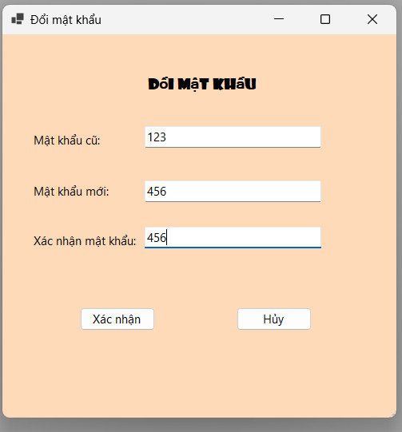

Hướng dẫn sử dụng chức năng Đổi mật khẩu.

Form "Đổi Mật Khẩu" (frmChangePass) cho phép người dùng thay đổi mật khẩu đăng nhập của mình. Dưới đây là các bước chi tiết để thực hiện thay đổi mật khẩu:
1. Mở Form Đổi Mật Khẩu
Bước 1: Đăng nhập vào hệ thống.
Bước 2: Trên menu, chọn "Tài Khoản" và sau đó chọn "Đổi Mật Khẩu".
2. Nhập Thông Tin Mật Khẩu
Bước 1: Trong form "Đổi Mật Khẩu", nhập các thông tin sau:
Mật Khẩu Hiện Tại: Nhập mật khẩu hiện tại của bạn.
Mật Khẩu Mới: Nhập mật khẩu mới mà bạn muốn thay đổi.
Xác Nhận Mật Khẩu Mới: Nhập lại mật khẩu mới để xác nhận.
3. Xác Nhận và Lưu Thay Đổi
Nhấn vào nút "Xác Nhận" để tiến hành đổi mật khẩu.